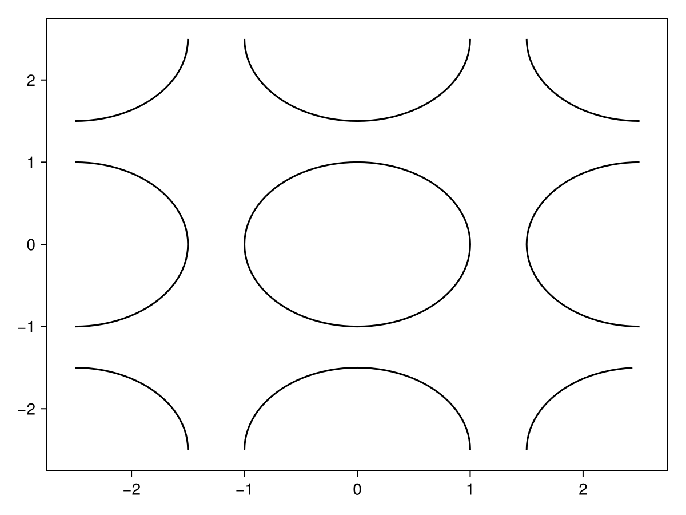
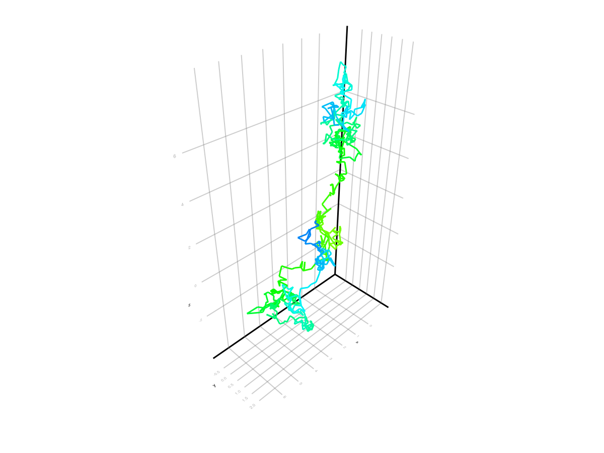
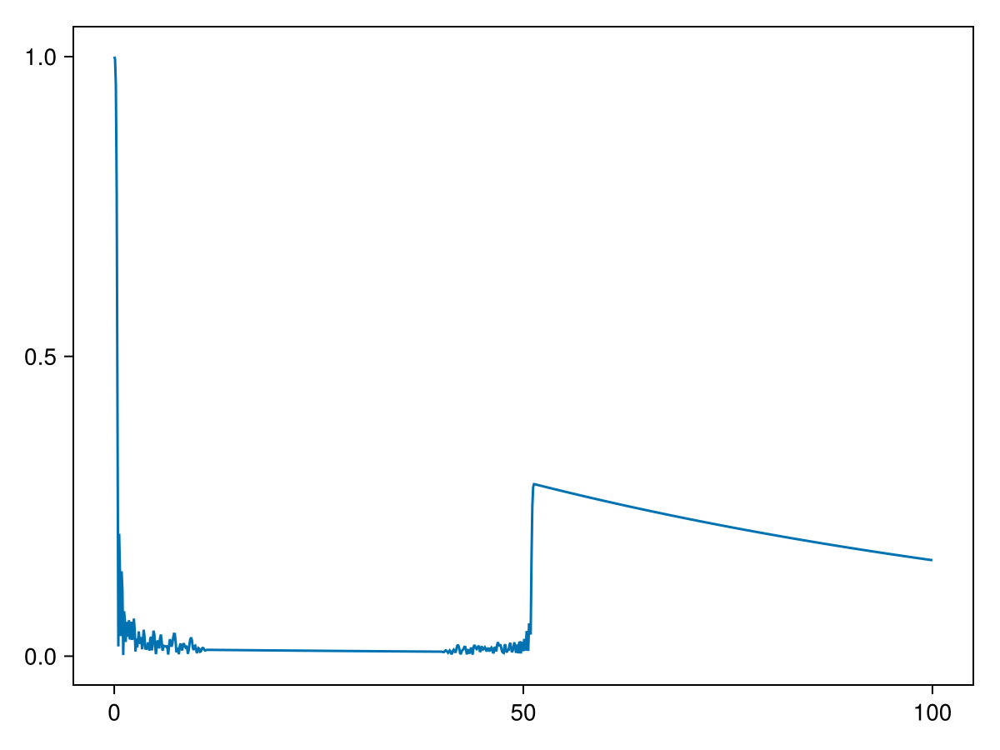
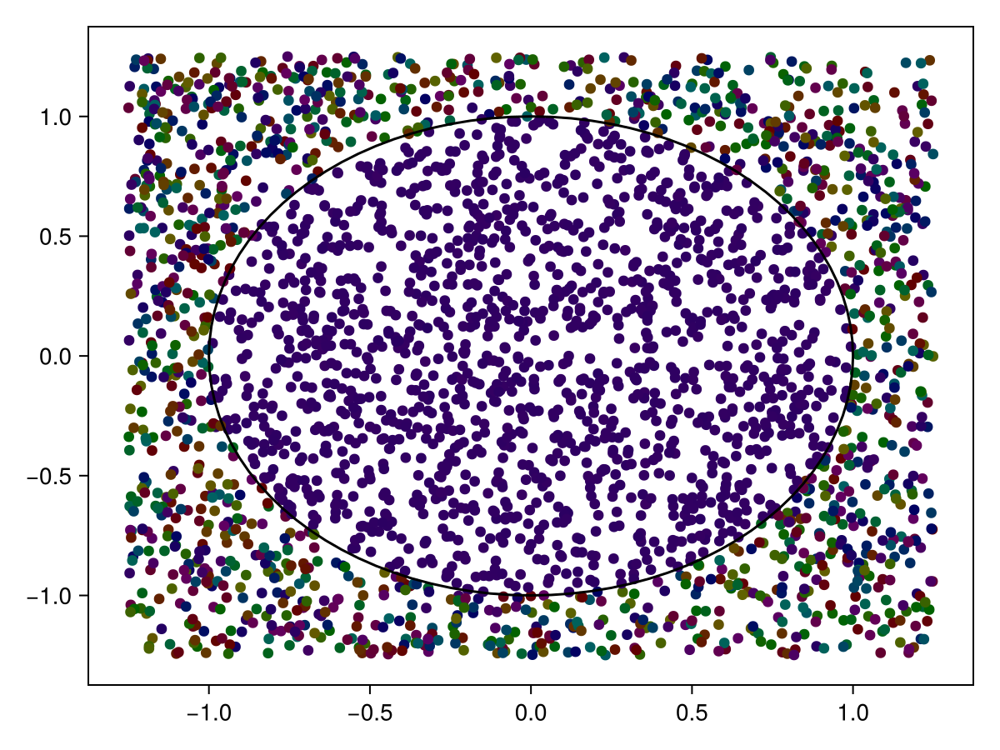

Introduction
MCMRSimulator.jl allows simulation of MR signal generation using Monte Carlo simulations. The spin evolution of randomly diffusing particles is tracked under influence of one or more MR sequences. At present, the simulator allows to model
- Free diffusion and diffusion restricted by walls, cylinders, spirals (experimental, spheres, or meshes
- T1 and T2 relaxation using global T1/T2 parameters
- MR sequences consisting of RF pulses, gradients, and readouts
- Off-resonance field generation by myelinated cylinders
- Magnetisation transfer between liquid spins and membranes in both a simplified way (i.e., spins relax when hitting an obstruction) or a more realistic way (spins get exchanged into the obstruction).
- Membrane permeability (i.e., exchange)
- Surface tension of membranes causing spins to get temporarily "stuck" when they hit a membrane
Future (potential) features:
- Off-resonance field generated by myelinated meshes
- Off-resonance field by iron particles
- Contribution from metabolites (i.e., spectroscopy)
This MR simulator is still under very active development and the API might still change substantially at any time!
We use the following units throughout (unless otherwise noted):
- Times are in ms. Equivalently, RF pulse amplitudes and off-resonance fields are in kHz (i.e., 1/ms).
- Positions are in um. So, gradients are in kHz/um (not mT/m).
- Angles are in degrees (not radians). These are used for phases (of spins and RF pulses) as well as RF pulse flip angles.
- Susceptibilities are in ppm.
Movie of spins moving through cylinders
Installation
- First install julia (e.g., from the official website or using juliaup).
- Start julia in the terminal (
$ julia). - Enter the package manager by pressing "]"
- Install MCMRSimulator.jl (
pkg> add https://git.fmrib.ox.ac.uk/ndcn0236/mcmrsimulator.jl.git) - Install one of the Makie backends for plotting (e.g.,
pkg> add CairoMakie) - Press "[backspace]" to leave the package manager
- Install MCMRSimulator.jl (
After this installation, you should be able to follow the steps in the tutorial below or create your own simulations.
Tutorial
This tutorial will walk through an example of modelling the MRI signal evolution for a diffusion-weighted sequence. The spins in this simulation will be constrained by regularly packed cylinders. After installation we can load MCMRSimulator.jl using
using MCMRSimulator
using CairoMakie # used for plotting; use GLMakie or WGLMakie for interactive plotsIn general, running a simulation will consist of the following three steps:
- Defining the microstructure and on or more sequences by creating an appropriate
Simulationobject. - Initialising one or more
Spinobjects. - Simulating a random walk of the spins through the microstructure and the MR signal produced by those spins.
- Plotting the MR signal or storing it to disk.
We will look through each of these steps below.
Defining the simulation
The first step is to define the environment through which the spins will evolve. We will do so by creating an appropriate Simulation object. This Simulation will contain information on the microstructure, the MR physics, and the enabled sequences.
These different steps are described in more detail in other sections of this documentation:
- How to define the microstrutural geometry
- Generate off-resonance fields due to the microstructural geometry
- Sequence generation
First we will define the geometry formed of regularly packed axons. This is represented by a single cylinder with a radius of 1 micrometer that repeats itself every 2.5 micrometer (in both the x-, and y-direction).
geometry = cylinders(1., repeats=[2.5, 2.5])
f = plot(PlotPlane(size=5), geometry) More complicated geometries can be generated as described here including geometries with magnetic susceptibility that produce off-resonance fields (see here).
More complicated geometries can be generated as described here including geometries with magnetic susceptibility that produce off-resonance fields (see here).
The next step is to define a sequence. Here we will adopt a single diffusion-weighted MRI sequence.
sequence = dwi(bval=2., TR=300, TE=80, scanner=Siemens_Prisma) # default gradient orientation in the x-direction
f = plot(sequence)
Once we have both a geometry and one or more sequences, we can put them together in a Simulation object (click on this object for more details on the many options available when setting up a simulation):
simulation = Simulation(sequence, R2=0.012, R1=3e-3, diffusivity=2., off_resonance=0.1, geometry=geometry)Note that we actually have to set the R2, R1, and diffusivity to non-zero values to enable those pieces of physics.
Initialising the simulation
We can initialise the simulation in one of three ways:
- An integer value indicating the number of spins to be simulated. The spins will be randomly distributed through a 1mm x 1mm x 1mm voxel and start with a longitudinal magnetisation in equilibrium.
- A sequence of positions (i.e., length-3 vectors) with the initial spin positions.
- A
Snapshot(i.e., collection of spins with a timestamp) from a previous simulation.
We will see examples of all three below.
Each Spin represents a single diffusing particle. Besides containing its current position, it also contains its contribution to the MR signal for each of the sequences in the simulation.
At each timepoint the current state of the spins is represented by a Snapshot.
Each Spin is assigned a random number state at creation, which will be used for its future evolution. This means that after creation of a spin or a Snapshot its future is fully determined. This ensures that when a spin is evolved through the same simulation multiple times, it sill follow the same path each time. This allows improved comparisons between simulations with the same geometry, but different sequences/physics. However, it can lead to confusing results (e.g., a simulation initialised with fill(Spin(), 500) will contain 500 spins all following the exact same path).
Running the simulation
Running the simulation is done through 4 functions, for which examples are shown below:
trajectory: follow the full state evolution for a small number of spinsevolve: evolve a large number of spins for a specific timereadout: return the spin states at the time of the sequence readoutssignal: return the average signal at high temporal resolution
Illustrating trajectories
We will start by illustrating the 2D trajectory for two spins, one inside and one outside of the cylinder. To plot the trajectory we first need to output the state of the all spins at a high temporal resolution, which can be done using trajectory:
# Simulate 2 spins with given starting positions for 3 ms
snapshots = trajectory([[0, 0, 0], [1, 1, 0]], simulation, 0:0.01:3.)
pp = PlotPlane(size=5.)
f = plot(pp, geometry)
plot_trajectory2d!(pp, snapshots) In this plot the color at each timepoint encodes the spin orientation. The brightness of the spin indicates the size of the transverse component with purely longitudinal spins being in black. The color of the spin encodes the phase of the MR signal in the transverse plane.
The trajectories can also be plotted in 3D:
f = plot_trajectory3d(snapshots)
When simulating a large number of spins, storing the spin state every timestep would become very memory-intensive. To get around this we will typically either store the average signal at a high temporal resolution or the full state at a low resolution. Let's have a look of examples for both.
Signal evolution
To store the total signal evolution we can use signal. At each timepoint this will return the total MR signal (for each sequence) as a SpinOrientation object. From this one can estimate the transverse component, the longitudinal component, and the phase. Here we plot the transverse component of the signal evolution as an example
times = 0:0.1:sequence.TR
average_signals = signal(3000, simulation, times) # simulate 3000 spins for a single repetition time
f = plot(sequence)
lines!(times, transverse.(average_signals)/3000.)
Readout at specific times
We can return a Snapshot at any time simply by running:
snapshot = evolve(3000, simulation, 80.)
pp = PlotPlane(size=2.5)
f = plot(pp, snapshot)
plot!(pp, geometry) The color encoding is the same as for the trajectory plot above. The brightness encodes the size of the transverse component, while the color encodes the phase of the MR signal in the transverse plane. We can see that outside of the cylinder the signal contribution is significantly reduced. The black arrows show the transverse spin for some random spins.
The snapshot returned by evolve can be used as a starting point for further simulations. We can use this to plot the longitudinal signal at the first and third TR using:
first_TR_start = Snapshot(1000)
fifth_TR_start = evolve(first_TR_start, simulation, sequence.TR * 2)
f = plot(sequence)
times = 0:0.1:100.
for start in (first_TR_start, fifth_TR_start)
simulated_signals = signal(start, simulation, times .+ start.time)
lines!(times, longitudinal.(simulated_signals)/3000., cycle=[:color])
end
Sequences will usually contain one or more Readout objects to mark the readout times. To get the Snapshot at these readouts during one repetition time, you can use readout.